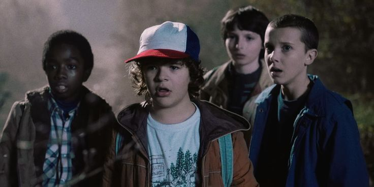

17-06-2024
“500 Days of Summer” is a heart-breaking love story that escaped stereotypes. Its quirkiness, realness, and the fantastic soundtrack makes you feel warm inside and also a little sad. Here is the list of films similar to 500 Days of Summer that are our recommendations. You can watch some of these movies like 500 Days of Summer on Netflix or Hulu or Amazon Prime.

17-06-2024
Don't get too comfortable atop Netflix's most popular TV shows list, Jenna Ortega: Stranger Things is returning soon. Well, maybe “soon” is overstating it. How about this? Stranger Things is returning for its fifth and final season… eventually. It's been nearly two years since season 4 of the hot Netflix series from the Duffer Brothers concluded, and fans have been pleading for information about the ending ever since.
17-06-2024
Peaky Blinders movie is all set to be released on Netflix.
The flim will feature Oscars 2024 winner Cillian Murphy in the lead role and is set to directed by Tom Harper.